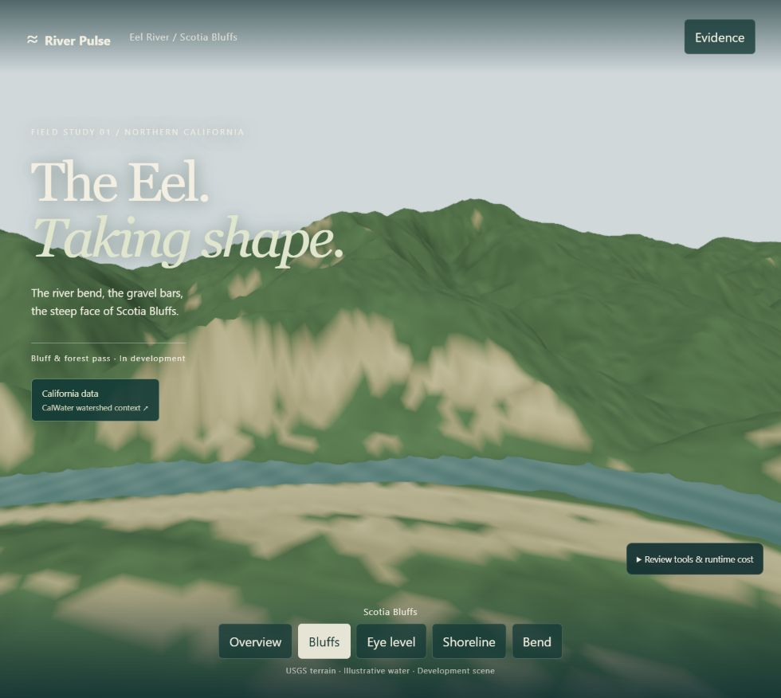
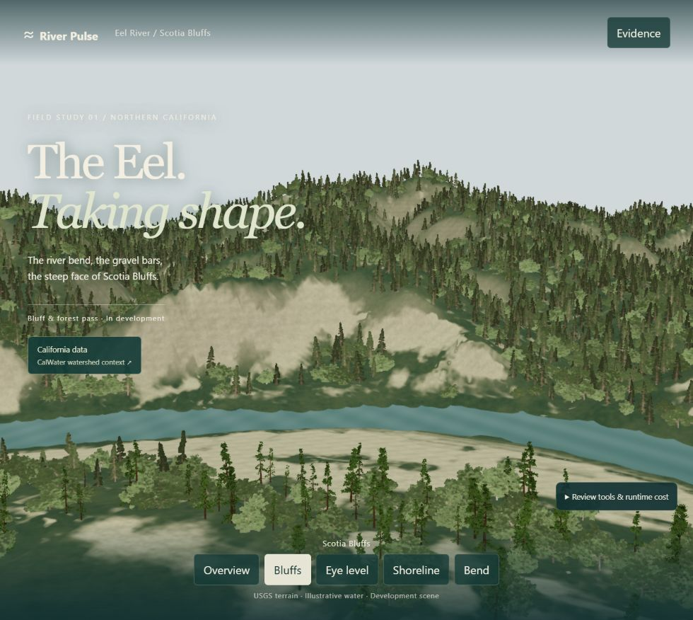
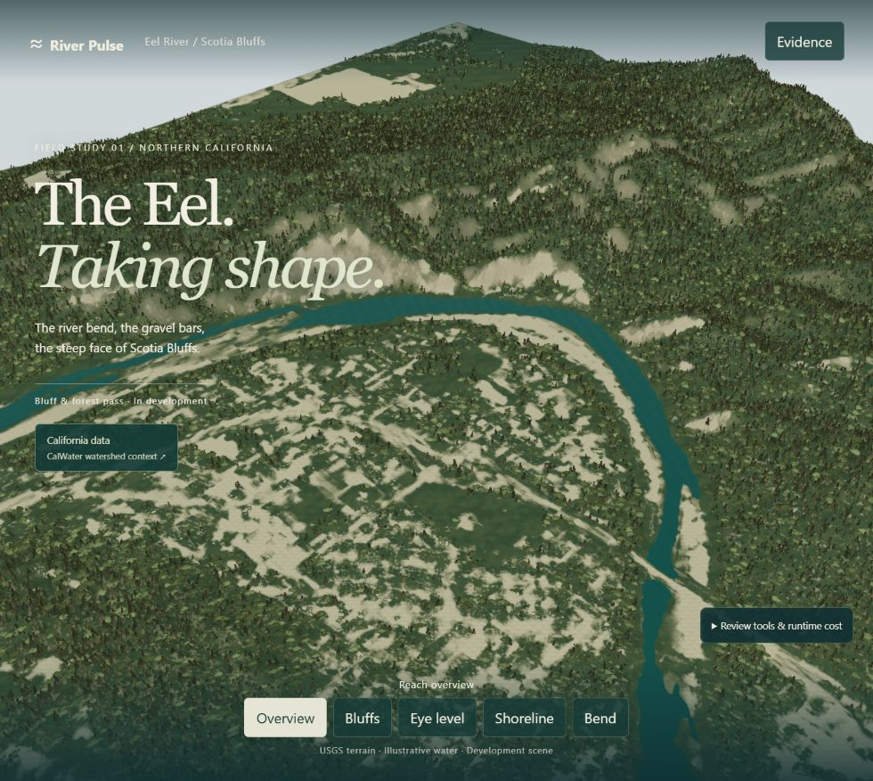
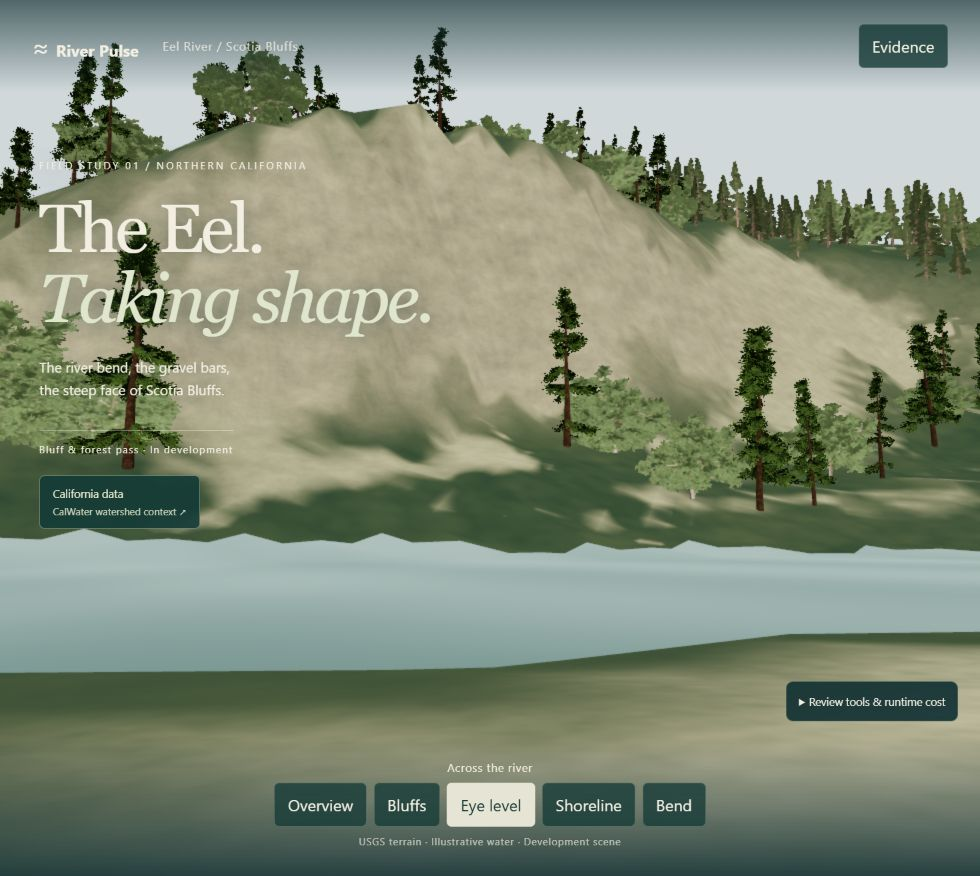
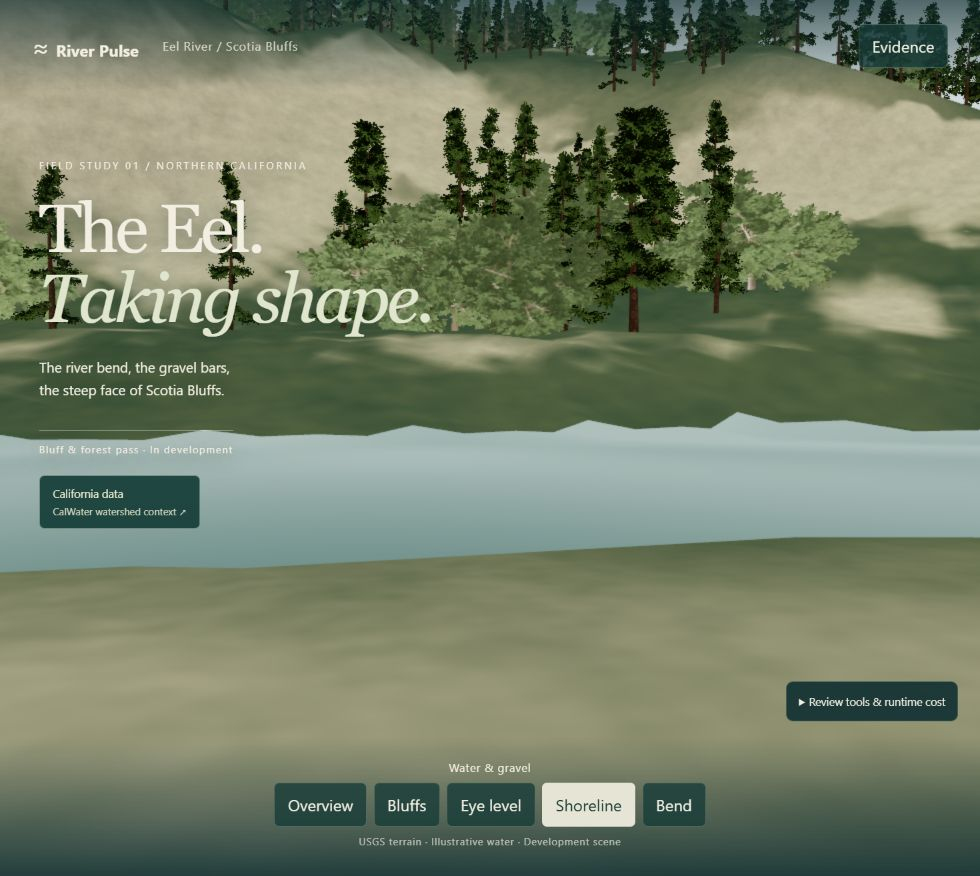
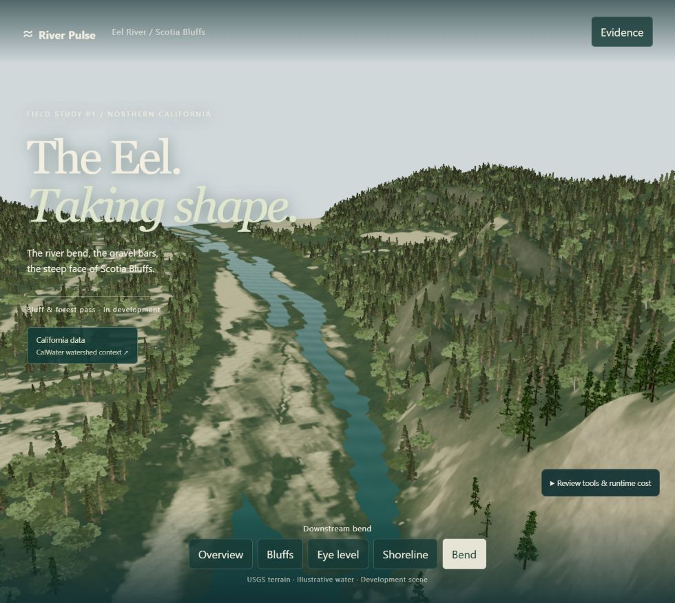
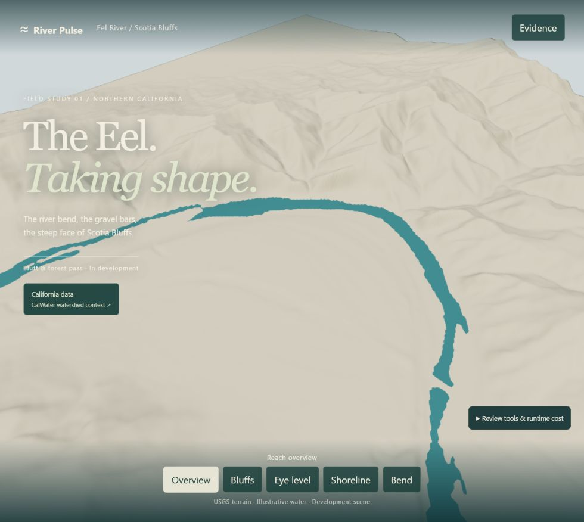
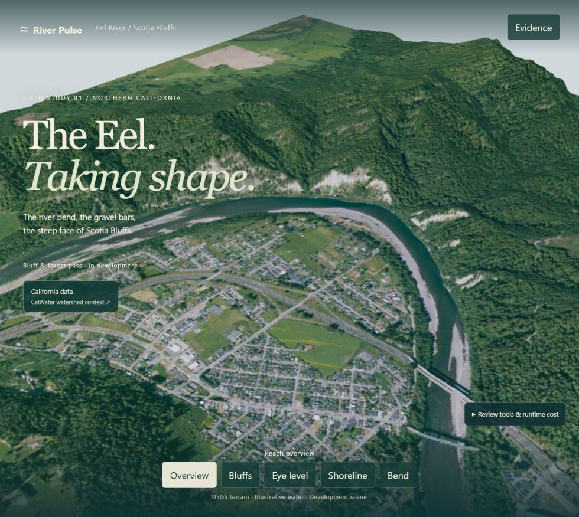
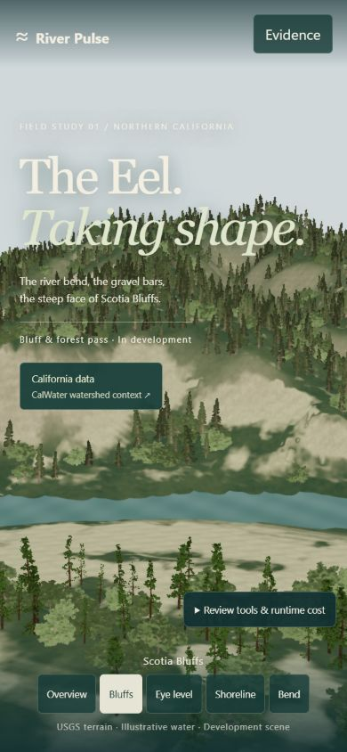
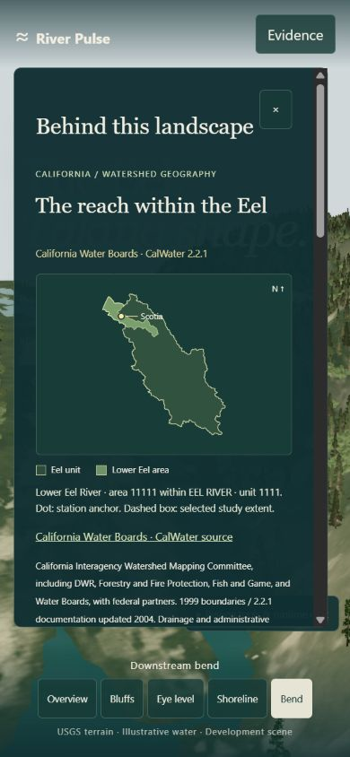

RIVER PULSE / RP20 / ACTUAL RUNTIME REVIEW
Actual local browser renders from the v1 cameras. Original terrain elevations and illustrative water retained. Authored vegetation and rock shading. Human review pending.
Interactive Eel scene · Sources, critique and costs · Earlier form/contact pass










The forest skyline and surface detail improved. Coarse cliff geometry, procedural tree repetition and undulating close water still need work. This is a bounded visual pass, awaiting human acceptance.